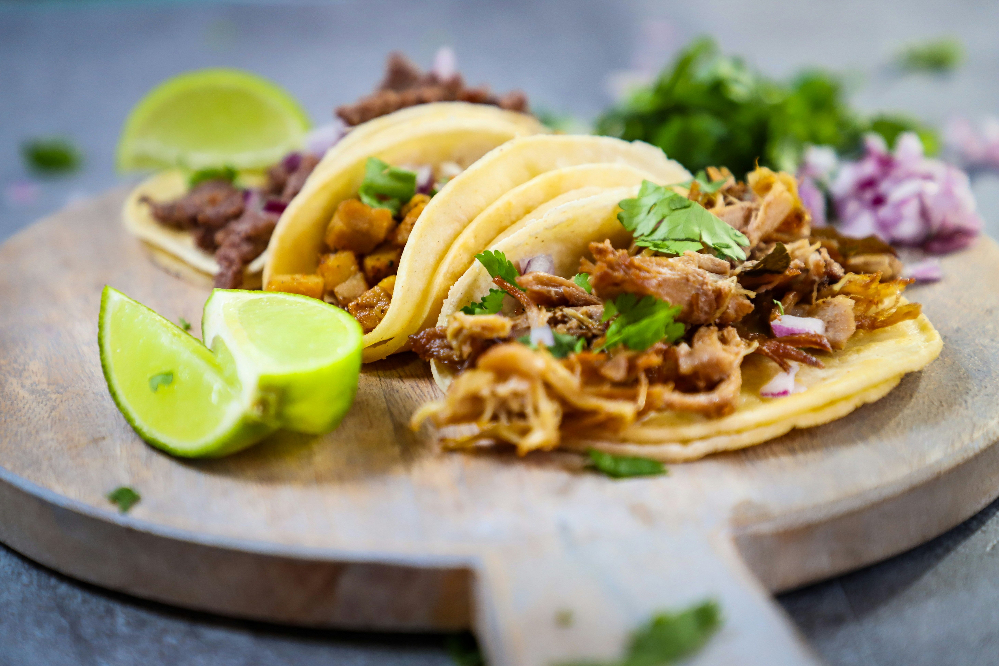

Home
Tacitos Recipe

Description
This is a delicious recipe for Tacitos, a popular dish from Latin America.
Cooking time : 30 minutes
Ingredients
- chicken breasts
- corn
- tortillas
- tomato
- onion
- cheese
- spices
- Avocado
- peperoni
Steps
- Heat the corn tortillas in a dry pan until they are warm and pliable.
- In a large pan, cook the chicken breasts with salt and pepper until fully cooked.
- Stir in the spices and let it simmer for a few minutes.
- Fill each tortilla with the chicken mixture and add your favorite toppings.
- Roll the tacitos tightly and serve immediately.
Extra : How to make delicious oignons confits
Ingredients
- 4 gros oignons rouges
- 2 cuillères à soupe d'huile d'olive
- 2 cuillères à soupe de sucre roux
- 3 cuillères à soupe de vinaigre balsamique
- 1 pincée de sel et de poivre
Préparation
- Faire suer les oignons : Chauffez l'huile d'olive dans une poêle ou une sauteuse à feu moyen. Ajoutez les oignons émincés et une pincée de sel. Laissez-les cuire environ 10 à 15 minutes en remuant régulièrement. Ils doivent devenir translucides et très tendres, sans dorer.
- Ajouter le sucre : Saupoudrez le sucre roux (ou le miel) sur les oignons. Mélangez bien et laissez caraméliser à feu doux pendant 5 minutes.
- Déglacer : Versez le vinaigre balsamique. Augmentez légèrement le feu pendant 1 minute pour faire s'évaporer l'acidité, puis baissez à nouveau le feu au minimum.
- Laisser confire : Laissez mijoter à feu très doux pendant 20 à 30 minutes en remuant de temps en temps. Les oignons doivent être bien sombres, fondants et le liquide doit être totalement absorbé (aspect confiture).
- Assaisonner : Ajustez le sel et le poivre selon vos goûts en fin de cuisson.
Good to know! You can keep these confit onions in the refrigerator for up to one week.
Home2r